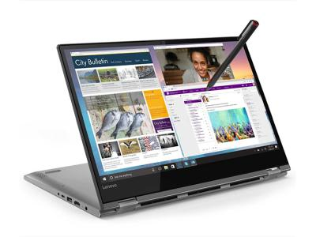

Ноутбук Lenovo Yoga 530-14IKB 81EK00QTRU Gray

Описание:
Intel Pentium 4415U 2300 MHz / 14.0" / 1920x1080 / 4.0Gb / 128Gb SSD / DVD нет / Intel HD Graphics 610 / Wi-Fi / Bluetooth / Win 10
Характеристики товара:
Тип
Тип — ультрабук
Операционная система — Win 10
Экран
Диагональ экрана — 14 дюйм
Разрешение экрана — 1920x1080, широкоформатный
Тип экрана — TFT IPS
Сенсорный экран — есть, Multi-Touch
Светодиодная подсветка экрана — да
Поддержка 3D — нет
Процессор
Процессор — Intel Pentium 4415U
Объем кэша L3 — 2 Мб
Видео
Видеокарта — Intel HD Graphics 610
Память
Оперативная память — 4 Гб, DDR4
Частота памяти — 2400 МГц
Количество слотов памяти — 1
Устройства хранения данных
Тип жесткого диска — SSD
Объем второго накопителя — 128 ГБ
Общий объем накопителей — 128 ГБ
Оптический привод — отсутствует
Беспроводная связь и подключение
Беспроводная связь — Wi-Fi 802.11ac, Bluetooth 4.1
Количество интерфейсов USB 2.0 — 1
Количество интерфейсов USB 3.0 — 2
Входы — микрофонный/выход на наушники Combo
Выходы — HDMI
Звук и устройства ввода
Звук — микрофон, колонки
Питание
Аккумулятор — 45 Вт ч
Время работы — 10 ч
Вес и габариты
Габариты (ДхШхТ) — 328x229x17.6 мм
Вес — 1.6 кг
Особенности и дополнительная информация
Камера — есть
Дополнительная информация — стилус в комплект не входит
Цвет — серый
Все права защищены ©